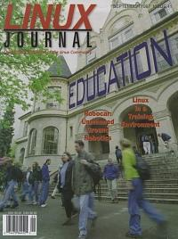

Shutdown Archive web server
Search:
Linux Journal
Issue #41/September 1997

Features
RoboCar: Unmanned Ground Robotics
by Kerry Kruempelstaedter
Students at the University of Colorado at Boulder use Linux on two networked computers which provide the brains for their entry in a robotic vehicle race.
Linux at Holt Public Schools
by Mark Lachniet
WAN links and linux proxy servers form the basis of a computer network for this Michigan public school system.
A Linux-based Lab for Operating Systems and Network Courses
by Richard Chapman and W.H Carlisle
Computer science students at Auburn University learn about operating systems and networking using Linux in the computer lab.
News & Articles
Using Linux in a Training Environment
by B. Scott Burkett
Programming with XForms, Part 3: The Library
by Thor Sigvaldason
Packet Radio under Linux
by Jeff Tranter
Reviews
Product Review
Empress RDBMD and Just Logic/SQL RDBMS
by Rob Wehrli
Product Review
Megahedron—A 3D Graphics Environment
by Michael J. Hammel
Product Review
SOLID Desktop 2.2 for Linux
by Bradley J. Willson
Book Review
Beginning Linux Programming
by Mark Shacklette
Book Review
Linux Configuration and Installation, Second Edition
by Harvey Friedman
WWWsmith
Building an ISP Using Linux and an Intranet
by Eric Harlow
At the Forge
Speaking SQL
by Reuven Lerner
Columns
Letters to the Editor
From the Editor
From the Publisher
Atlanta Linux Showcase Report
by Phil Hughes and Todd Shrider
Stop the Presses
Linux Grows Up
by Phil Hughes
Linux Apprentice
Introduction to Named Pipes
by Andy Vaught
Linux Means Business
Linux for Embedded Systems
by Sandor Markon & Kenji Sasaki
New Products
System Administration
Quota: Managing Your Disk Space
by Jan Rooijackers
Kernel Korner
The sysctl Interface
by Alessandro Rubini
Best of Technical Support
Archive Index
Shutdown Archive web server
Search:
Copyright © 1994 - 2018
Linux Journal
. All rights reserved.